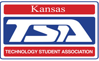
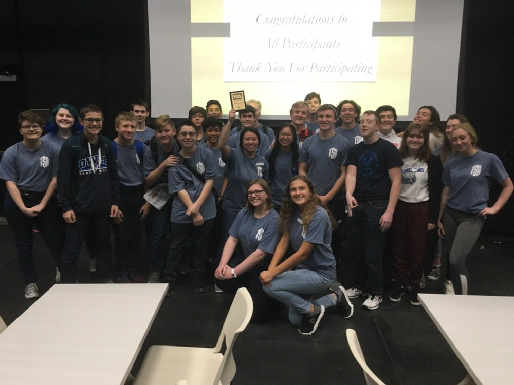
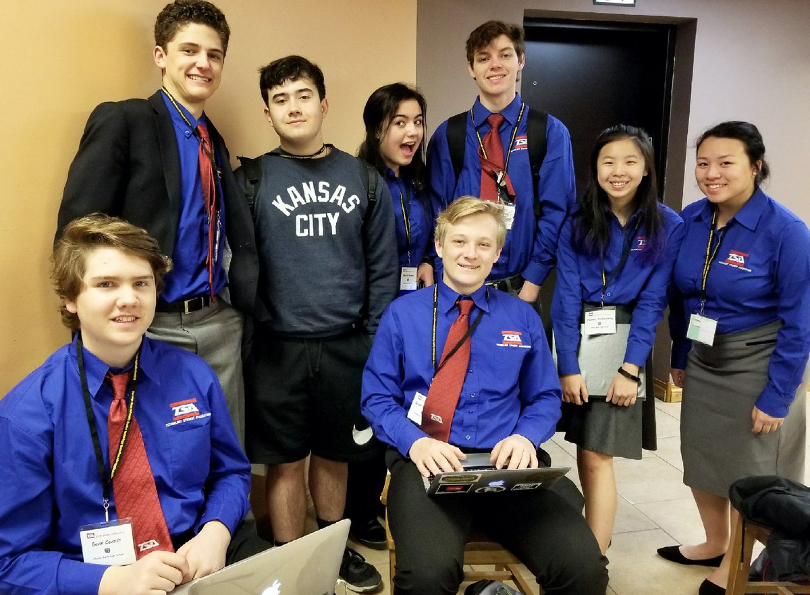
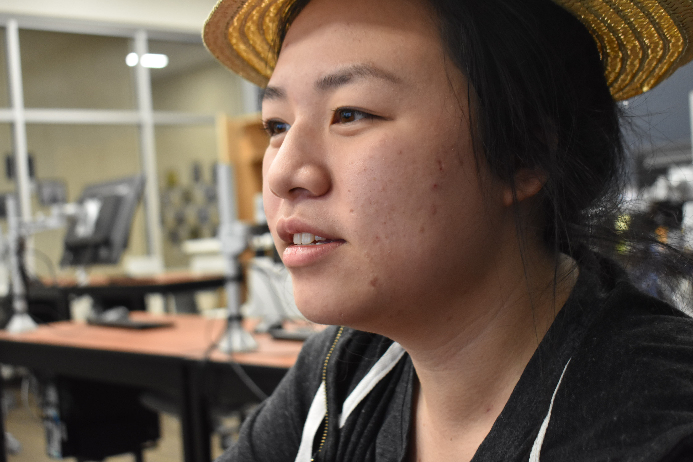
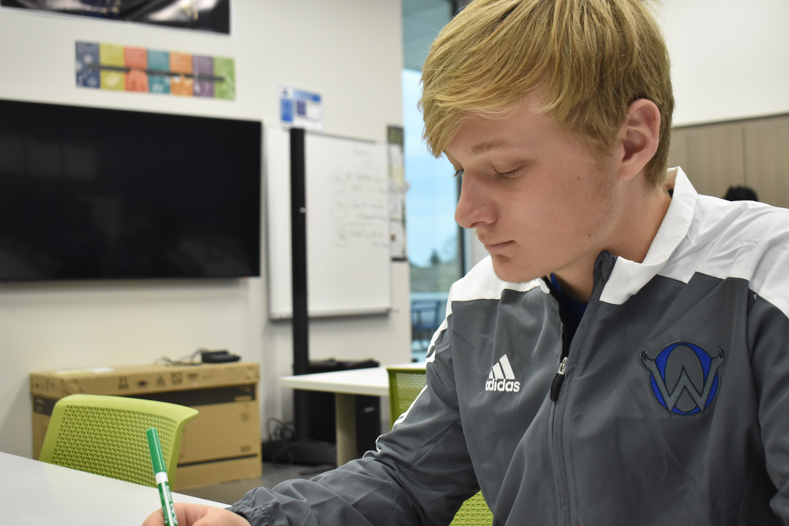
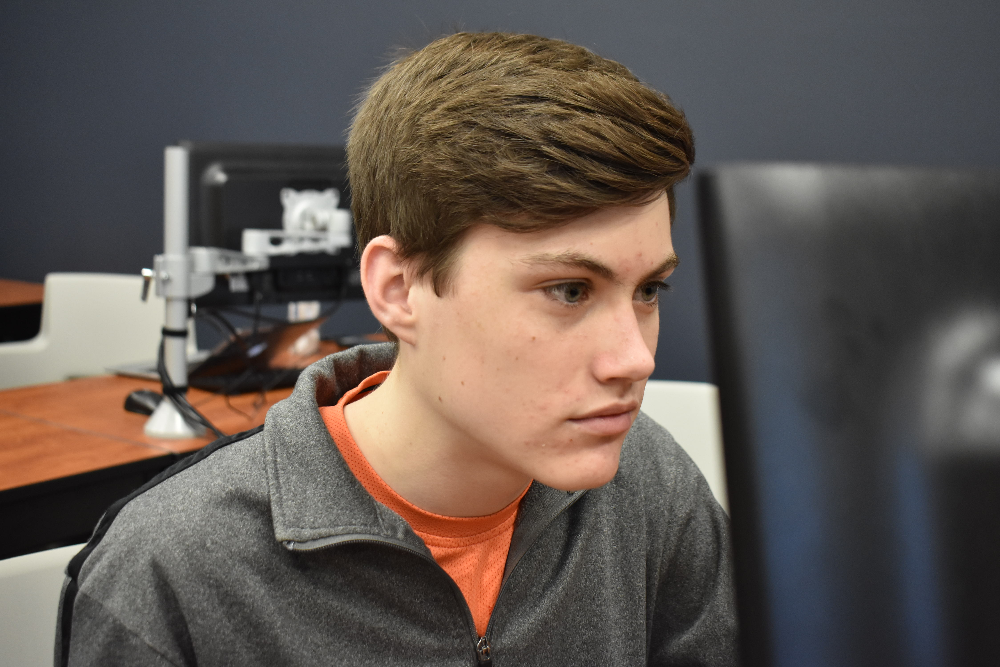

Our Team
Our Team
Olathe West TSA

Kansas Motto and Creed
Ad astra per aspera
We believe in Kansas, in the glory of her prairies, in the richness of her soil, in the beauty of her skies, and in the healthfulness of her climate.
We believe in the Kansas people, in their sturdy faith, and abounding enthusiasm; in their patriotism and their fidelity to the good things of civilization; in their respect for law and their love of justice; in their courage and zeal; in their independence and in their devotion to uplifting influences in education and religion.
We believe in Kansas institutions; in the Kansas language and in the Kansas ideals in her cleanliness of society, and in her demands that honor, sobriety and respect be maintained in public and private life; in her marvelous productiveness and in her wonderful future.
Olathe West 2019 TSA Regional Team

The Olathe West TSA chapter was established the first year of school, 2017, and started with just 16 members. Since then, it has grown to over 20 members going out for regionals and 16 members going out for state competitions. Last year, Olathe west qualified in 9 at state and this year place in 4 at regionals.
Kansas Motto and Creed
Outreach and Community Service
Olathe west TSA is currently fundraising to raise money for an activities statue for the school, since this is the second year, no community service projects or activities including the school have been conducted.
Olathe West 2019 TSA Officers
TSA President: Hannah Snakenberg

A member of TSA since her Sophomore year, placing in 3 events last year, this is Junior, Hannah Snakenberg's first year as President. Hannah enjoys helping her team stay organized and fighting for voting delegate placements.
TSA Vice President: Dahlia Vang

A member of TSA since her Sophomore year, placing in 3 events last year, this is Junior Dahlia Vang's first year as Vice President. Currently enrolled in APLANG, Dahlia enjoys writing poetry, satire, and analysis papers, as well as the occasional rap.
TSA Treasurer: Quinn Stambaugh

A member of TSA since his Freshman year, placing in 2 events last year, this is Junior Quinn Stambaugh's first year as Treasurer, having been the former TSA President. Quinn's hobbies include, track, sports, hands on projects, and also writing poetry.
TSA Sargent of Arms: Brody Boxberger

A member of TSA since his Freshman year, placing in 2 events last year, this is Sophomore Brody Boxberger's first year as Sargent of Arms. Brody's hobbies reading, playing games, and also writing poetry.
Our School
Our Team